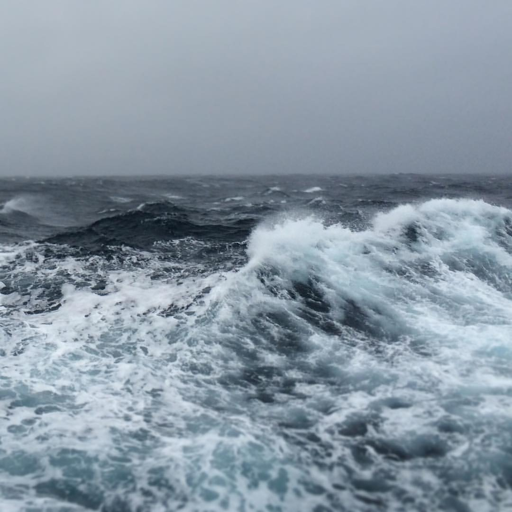
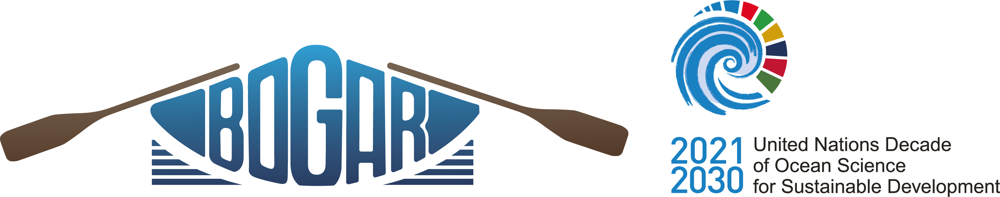
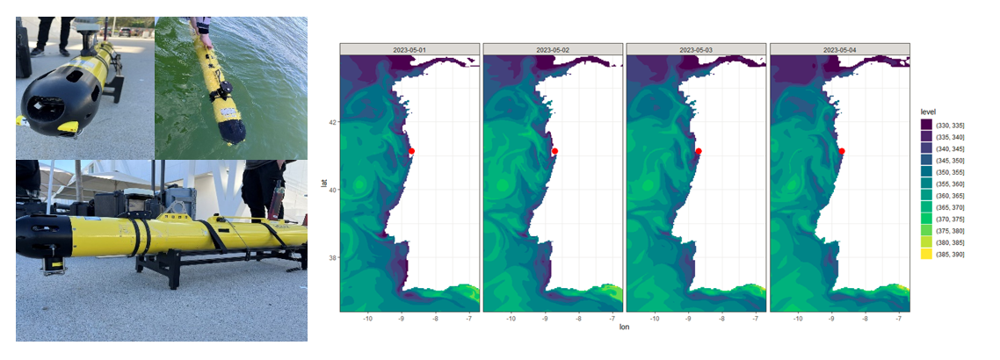
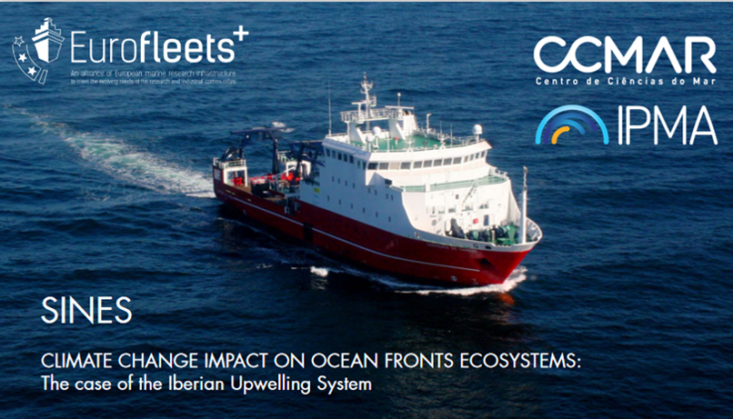

(reverse chronological order)
Ocean
Alkalinity Enhancement Pelagic Impact Intercomparison Project
(OAEPIIP).
This project, funded by the Carbon to Sea Initiative and endorsed by
SOLAS, represents a globally coordinated effort to investigate the
potential effects of ocean alkalinity enhancement on diverse plankton
communities. Spanish Intercomparison experiment leader:
Marcos Fontela.
Observación de variables biogeoquímicas de relevancia
climática con buques de oportunidad en la costa gallega y rías
(BOGAR).
Project endorsed by the UN Decade of Ocean
Science. PTA2022-021307-I.



Global Ocean Acidification Observing Network (GOA-ON)
Pier2Peer Program.
Private funds from the Ocean Foundation’s International Ocean
Acidification Initiative 2022 Application
Ocean Training Partnership Nippon Foundation-Partnership
for Observation of the Global Ocean (NF-POGO) Eurofleets+ Shipboard Training.
Private funds from the Nippon Foundation in partnership with POGO 2022
Application
Marcos Fontela, 2025 ©. This web is made with R-markdown.